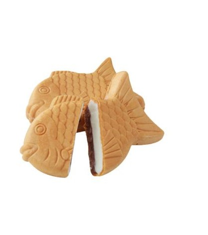
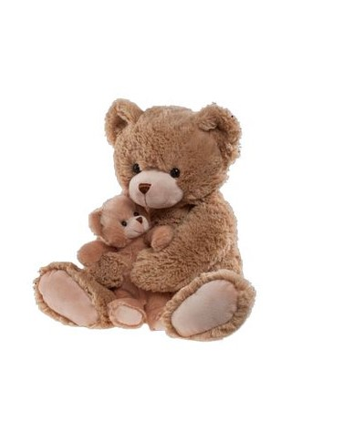

Cheryn's Web about me
profile
profile
By clicking on the "profile" link, you will gain access to my profile page. The page will assist you to the general idea of who I am.
Through this, you will gain information about my overall background, and the goals I strive to achieve throughout my life.
books

books
Books are vastly common and yet I am rarely exposed to people reading solely for their entertainment and curiosity. This has been the case for me as well, as I have been struggling to adapt to the beauty and the enjoyment of books for a particularly long time.
After finding myself in a dark situation, I finally reached out for books myself. I feel that my life has been freshly renovated since.
Reading books is highly underrated. Books are vital as they present new information, stories and the general idea of the world in which people should present themselves to.
travel

travel
The strong reducement of stress in which travelling provides is influential and eminently beneficial.
As a matter of fact, I have been travelling around the world ever since I was born, as I come from a western country whereas my family derives from East Asia.
This page will go through the
extracurricular work
extracurricular
At the age of seven, I was exposed to the beauty of a cello. I have been playing the mellifluous instrument ever since.
The sound of the cello reminded me of a whale. The vast, roaring sound in which a cello is capable of was fascinating to.
jjajja
projects
projects
I haaven't
jjajja
jjajja